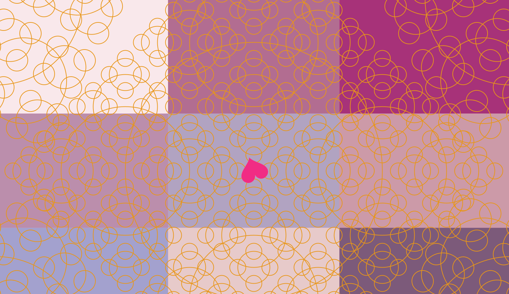

Contents
※ところどころページがないボタンあります
Biography
 イメージ（こんなに美人ではありません）
イメージ（こんなに美人ではありません）
Timeline
-
- 2000
-
熊本県
IC天王星合。日柱に駅馬。
ヘリオセントリックチャート水星天王星スクエア。
天に定められし引っ越しの運命(￣▽￣;)
-
- -2005
-
静岡->熊本->静岡
色々引っ越す。食いしん坊で泣き虫な幼少時代を過ごす。
-
- 2006-2007
-
北海道
雪深い地域。近くの公園でスピードスケートを習ったり。
公文、ピアノを習い始めたり。
-
- 2008-2009
-
静岡県
富士山のふもと。でも富士山には登っていない。
毎日外で日が暮れるまで遊んでいた記憶。
一輪車教室とか、バトミントン教室とか、地域のドッジボール大会に参加したり。
あと、富士サファリパークで猫に引っかかれ、猫が苦手になる。 百人一首を始める。だけど、転校してきて初めてなので負けてばっかり。動体視力も良くないし。
-
- 2010-2011
-
神奈川県
海抜5メートルの小学校に通う。
夏休みはお盆の時期までほぼ毎日海で遊ぶ。
ムラサキウニをその場で割って中身を食べたり。
イトマンスイミングスクールにも通ってたけど、最後までバタフライはできるようにならなかった
記憶力を伸ばすことにこだわっていて論語や平家物語を丸暗記したり。 星空が好きで、天体望遠鏡でよく父と天体観察したり。
-
- 2012-2013
-
兵庫県
勉強、百人一首やピアノがすごく楽しかった時期。
ピアノに関しては..優しくて美人で大好きだっただけかも？（笑）
電車に乗ってでも先生に会いに行く..
図書館「ことばぐら」が好きで通い詰める。
ハリーポッターシリーズが好きすぎて、
インフルエンザになっても、絵をかいてても、勉強してても片手にハリーポッターを持つ。
-
- 2014-2015
-
熊本県
引き続き勉強とピアノに精を出しつつも、進路のことで思い悩むようになる。
- 2016-
-
高校
高校に入ってからメンタルを病んでしまい、卒業後しばらく浪人生活を送る。
浪人時代は..もっぱら読書と日記を書く。
アリストテレス曰く、
「教養は幸運な時には飾りとなるが、不幸の中にあっては命綱となる」 これ、ほんとです。 あと、この時期から占星術にはまる。
-
- 2021~
-
大学入学 北海道
プログラミングを始める。ここまではexcelすら使いこなせない哀れな子羊だったが..
情報表現入門：タロットアプリ 
意外とプログラミングが面白いかもしれない..と思い始めるようになる。
プログラミング初心者でも、ちゃんと楽しめるカリキュラムになってます（すごい）。未来大での生活はContentsのDiaryを見てね!
AIに興味を持ち始める。
2022- 複雑系コース
2023- 長期インターンシップ参加へ
-
- Now...
- Tweets by XDevelopers
-
- 2026- 再び射手座へ。
-
2ハウス(財宝のハウス) 射手座太陽
"Pelicans moving their habitat."
開拓者精神を発揮する、という意味らしいです。
とりあえず..卒業できるかな...?（やばそう）
Map
Motto
THE SERENITY PRAYER
O God, give us
神よ、どうか私たちに
serenity to accept what cannot be changed,
変えられぬものを受け入れる静けさと
courage to change what should be changed,
変えるものを変える小さな勇気と
and wisdom to distinguish the one from the other.
それらの違いを見抜く智慧をお与えください。